기계정비산업기사 (2018-03-04 기출문제)
1과목: 공유압 및 자동화시스템
1. 공학기압 1 at와 크기가 다른 것은?
- 10 bar
- 10 mAq
- 1 kgf/cm2
- 10000 kgf/m2
(정답률: 68%)

2. 릴리프 밸브를 이용한 유압 브레이크 회로에서 유압 모터를 정지시키고자 오일의 공급을 중단했을 때 유압 모터의 현상은? (단, 모터축의 부하 관성이 크다.)
- 바로 정지한다.
- 잠시동안 고정된다.
- 얼마간 회전을 지속하다가 정지한다.
- 급정지했다가 관성에 의해 다시 회전한다.
(정답률: 90%)
3. AND밸브라고도 불리며 연동제어, 안전제어에 사용되는 밸브는?
- 2압 밸브
- 셔틀 밸브
- 차단 밸브
- 체크 밸브
(정답률: 83%)
4. 내경 32mm의 실린더 10mm/s의 속도로 움직이려 할 때 필요한 최소 펌프 토출량은 약 몇 ℓ/min 인가?
- 0.48
- 1.04
- 1.52
- 2.17
(정답률: 48%)
5. 일반적인 압축공기의 생산과 준비 단계가 옳은 것은?
- 압축기→건조기→서비스 유닛→애프터 쿨러→저장탱크
- 압축기→애프터 쿨러→저장탱크→건조기→서비스 유닛
- 압축기→건조기→서비스 유닛→저장탱그→애프터 쿨러
- 압축기→서비스 유닛→애프터 쿨러→건조기→저장탱크
(정답률: 68%)
6. 직선왕복운동용 액추에이터가 아닌 것은?
- 다단 실린더
- 단동 실린더
- 복동 실린더
- 요동 실린더
(정답률: 74%)
7. 다음 유압밸브에서 알 수 없는 것은?
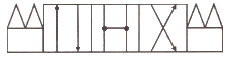
- 3위치
- 4포트
- 가스켓
- 오픈 센터
(정답률: 84%)
8. 제어시스템에서 신호발생요소의 작동 상태를 알 수 있으며 시퀸스상의 간섭 유무를 판별할 수 있는 것은?
- 논리도
- 제어선도
- 내부결선도
- 변위단계선도
(정답률: 67%)
9. 유압펌프에서 압력이 상승하지 않는 경우 점검사항이 아닌 것은?
- 언로드 회로의 점검
- 릴리프 밸브의 압력설정 점검
- 유량조절밸브의 조절 상태 점검
- 펌프 축 및 카트리지 등의 파손 점검
(정답률: 52%)
10. 무부하 밸브(unloading valve)에 대한 설명으로 틀린 것은?
- 동력을 절감시키는 역할을 한다.
- 유압의 상승을 방지하는 역할을 한다.
- 실린더의 부하를 감소시키는 역할을 한다.
- 펌프 송출량을 탱크로 되돌리는 역할을 한다.
(정답률: 49%)
11. 제작회사에서 미리 ROM에 프로그램 내용을 기억시켜 스스로 판독하여 프로그램을 수행할 수 있도록 만든 것은?
- EPROM
- EEPROM
- PROM
- MASK ROM
(정답률: 73%)
12. 다음 밸브 작동 방법 기호의 의미는?
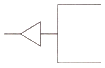
- 감압 작동
- 레버 작동
- 압축 공기 작동
- 롤러 레버 작동
(정답률: 68%)
13. 큰 운동에너지를 얻기 위해 설계된 것으로 리벳팅, 펀칭, 프레싱 작업 등에 사용되는 실린더는?
- 충격 실린더
- 양로드 실린더
- 쿠션 내장형 실린더
- 텔레스코프형 실린더
(정답률: 80%)
14. 자동화 시스템 유지보수에 관한 설명 중 틀린 것은?
- 유지 보수비 지출을 가능한 최소로 하는 것이 전체 생산 원가를 줄이는 방법이다.
- 설비의 상태를 관찰하여 필요한 시기에 필요한 보전을 하는 것을 개량보전(CM)이라 한다.
- 예비 부품의 상시 확보 여부는 그 부품의 보관비용과 고장 빈도 또는 고장 1회당 설비 손실 금액을 고려하여 결정하여야 한다.
- 설비가 고장을 일으키기 전에 정기적으로 예방 수리를 하여 돌발적인 고장을 줄이는데 목적이 있는 설비 관리 기법이 예방보전(PM)이다.
(정답률: 70%)
15. 미터-아웃 유량제어 방식의 특징으로 틀린 것은?
- 부하가 카운터 밸런스 되어 있어 끄는 힘에 강하다.
- 교축 요소에 의하여 발생된 열은 탱크로 옮겨진다.
- 낮은 속도 조절면에서 미터-인 방식보다 불리하다.
- 유압유의 압축성 측면에서 미터-인 방식보다 유리하다.
(정답률: 54%)
16. 검출 물체가 센서의 작동 영역(감지거리이내)에 들어올 때부터 센서의 출력 상태가 변화하는 순간까지의 시간 지연을 무엇이라 하는가?
- 동작주기
- 복귀시간
- 응답시간
- 초기지연
(정답률: 80%)
17. 직류 전동기가 과열하는 원인이 아닌 것은?
- 저전압
- 과부하
- 핸들 이송 속도가 느림
- 저항 요소 또는 접촉자의 단락
(정답률: 79%)
18. 다음 중 서보센서가 아닌 것은?
- 리졸버
- 엔코더
- 서미스터
- 타코미터
(정답률: 72%)
19. 메모리 제어의 설명으로 옳은 것은?
- 이번단계 완료 여부를 센서를 이용하여 확인 후 다음단계의 작업을 수행하는 제어
- 시스템 내의 하나 또는 여러 개의 입력변수가 약속된 법칙에 의하여 출력변수에 영향을 미치는 공정
- 어떤 신호가 입력되어 출력신호가 발생한 후에는 입력신호가 없어져도 그때의 출력상태를 유지하는 제어
- 제어하고자 하는 하나의 변수가 계속 측정되어 다른 변수, 즉 지령치와 비교되며 그 결과가 첫 번째의 변수를 지령치에 맞추도록 수정을 가하는 것
(정답률: 76%)
20. 로터의 피치가 60°, 극수가 8, 회전자의 치수가 6인 4상 스테핑 모터의 스텝각은?
- 15°
- 24°
- 32°
- 48°
(정답률: 50%)
2과목: 설비진단관리 및 기계정비
21. 진동 차단기의 기본 요구조건 중 틀린 것은?
- 온도, 습도, 화학적 변화 등에 대해 견딜 수 있어야 한다.
- 차단하려는 진동의 최저 주파수보다 큰 고유 진동수를 가져야 한다.
- 차단기의 강성은 그에 부착된 진동 보호대상체의 구조적 강성보다 작아야 한다.
- 강성은 충분히 작아 차단능력이 있되 작용하는 하중을 충분히 받칠 수 있어야 한다.
(정답률: 67%)
22. 변위 센서의 종류가 아닌 것은?
- 압전형
- 와전류형
- 전자 광학형
- 정전 용량형
(정답률: 62%)
23. PM(Phenomena mechanism) 분석의 단계별 내용에 해당되지 않은 것은?
- 현상을 명확히 한다.
- 조사방법을 검토한다.
- 이상한 점을 발견한다.
- 최적 조건을 파악한다.
(정답률: 49%)
24. 진동 센서 고정방법 중 주파수 영역이 넓고 진동 측정 정확도가 가장 좋은 것은?
- 손 고정
- 나사고정
- 밀랍 고정
- 마그네틱 고정
(정답률: 81%)
25. 생산의 정지 혹은 휴해한 성능저하를 초래하는 상태를 발견하기 위한 설비의 정기적인 검사를 무엇이라 하는가?
- 개량보전
- 사후보전
- 예방보전
- 보전예방
(정답률: 78%)
26. 다음 그림과 같은 보전 조직은?
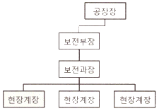
- 지역보전
- 집중보전
- 부문보전
- 절충보전
(정답률: 67%)
27. 다음 설비보전 표준 중 검사, 정비, 수리 등의 보전작업 방법과 보전작업 시간의 표준을 말하는 것은?
- 설비 성능표준
- 일상 점검표준
- 설비 점검표준
- 보전 작업표준
(정답률: 61%)
28. 다음 중 회전기계의 진동 측정방법 중 변위를 측정해야 하는 경우로 가장 적합한 것은?
- 회전축의 흔들림
- 캐비테이션 진동
- 베어링 홈 진동
- 기어의 홈 진동
(정답률: 66%)
29. 다음 그림과 같은 설비관리의 조직형태는?
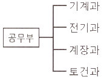
- 기능별 조직
- 대상별 조직
- 전문기술별 조직
- 매트릭스(Matrix) 조직
(정답률: 79%)
30. 팽창식 체임버(chamber)의 소음기 면적비는?
- 팽창식 체임버의 단면적/연결 길이
- 연결 길이/팽창식 체임버의 단면적
- 연결 덕트의 단면적/팽창식 체임버의 단면적
- 팽창식 체임버의 단면적/연결 덕트의 단면적
(정답률: 56%)
31. 보전자재 관리상의 특징으로 틀린 것은?
- 불용 자재의 발생 가능성이 적다.
- 자재구입품목, 구입 수량, 구입 시기계획을 수립하기 곤란하다.
- 보전 기술수준 및 관리수준이 보전자재의 재고량을 좌우하게 된다.
- 보전자재는 년 간 사용빈도가 낮으며, 소비속도가 늦은 것이 많다.
(정답률: 61%)
32. 설비배치에서 설비의 소요 면적 결정방법이 아닌 것은?
- 변환법
- 계산법
- 이분법
- 비율 경향법
(정답률: 60%)
33. 고속도로 회전하는 기어 및 베어링 등에서 충격력 등과 같이 힘의 크기가 문제로 되는 이상의 진단 시 일반적으로 사용되는 측정변수는?
- 변위
- 속도
- 가속도
- 위상각
(정답률: 66%)
34. 정현과 신호에서 진동의 크기를 표현하는 방법으로 피크 값의 2/π인 값은?
- 편진폭
- 양진폭
- 평균값
- 실효값
(정답률: 54%)
35. 유(oil)윤활과 비교한 그리스 윤활의 장점으로 옳은 것은?
- 누설이 적다.
- 냉각작용이 크다.
- 급유가 용이하다.
- 이물질 혼입 시 제거가 용이하다.
(정답률: 67%)
36. 제품의 크기, 무게 및 기타 특성 때문에 제품 이동이 곤란한 경우에 생기는 배치 형태로 자재, 공구, 장비 및 작업자가 제품이 있는 장소로 이동하여 작업을 수행하는 설비배치의 형태는?
- 공정별 배치
- 제품별 배치
- 혼합형 배치
- 제품 고정형 배치
(정답률: 77%)
37. 종합적 생산보전 활동과 가장 거리가 먼 것은?
- 계획보전체제를 확립한다.
- 작업자를 보전 전문요원으로 활용한다.
- 설비에 관계하는 사람은 빠짐없이 참여한다.
- 설비의 효율화를 저해하는 로스(loss)를 없앤다.
(정답률: 72%)
38. 설비관리의 조직계획에서 지역이나 제품, 공정 등에 따라 설비를 분류하여 그 관리를 담당하는 방식은?
- 기능 분업
- 지역 분업
- 직접 분업
- 전문기술 분업
(정답률: 79%)
39. 다음 중 설비의 체질 개선을 위하여 실시하는 보전활동은?
- 예방보전
- 생산보전
- 개량보전
- 고장보전
(정답률: 77%)
40. 음파가 서로 다른 매질을 통과할 때 구부러지는 현상을 무엇이라고 하는가?
- 음의 반사
- 음의 간섭
- 음의 굴절
- 마스킹(Masking) 효과
(정답률: 87%)
3과목: 공업계측 및 전기전자제어
41. 0.1H의 코일에 60Hz, 200V인 교류전압을 인가하면 유도리액턴스는 약 몇 Ω인가?
- 12
- 18.8
- 37.7
- 125.6
(정답률: 64%)
42. 기호 중 계전기의 b접점을 나타낸 것은?
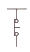
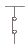
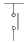
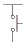
(정답률: 69%)
43. 셰이딩 코일형 전동기의 특성이 아닌 것은?
- 구조가 간단하다.
- 효율이 좋지 않다.
- 기동 토크가 매우 작다.
- 회전 방향을 바꿀 수 있다.
(정답률: 63%)
44. 제어 밸브는 프로세스의 요구에 따라 여러 종류의 형식이 있다. 다음 중 제어 밸브를 조작 신호와 밸브 시트의 형식에 따라 분류할 때 조작 신호에 따른 분류에 속하는 것은?
- 격막밸브
- 글로브밸브
- 게이트밸브
- 자력식밸브
(정답률: 45%)
45. 다음 그림에서 검류계의 지침이 0을 지시하고 있다면 미지전압 EX는 몇 V 인가?
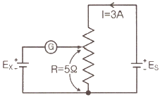
- 10
- 15
- 20
- 30
(정답률: 81%)
46. 직류발전기의 전기자 철심을 성층 철심으로 하는 이유는?
- 동손의 감소
- 철손의 감소
- 풍손의 감소
- 기계손의 감소
(정답률: 70%)
47. 옴의 법칙(Ohm’s law)에 관한 설명 중 옳은 것은?
- 전압은 전류에 비례한다.
- 전압은 저항에 반비례한다.
- 전압은 전류에 반비례한다.
- 전압은 전류의 2승에 비례한다.
(정답률: 74%)
48. 다음의 그림은 3상 유도전동기의 단자를 표시한 것이다. 이 전동기를 △결선하고자 한다면?
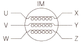
- X-Y-Z, U-V-W를 연결한다.
- U-W, Z-Y, V-X를 연결한다.
- U-Y, V-W, X-Z를 연결한다.
- U-Y, V-Z, W-X를 연결한다.
(정답률: 76%)
49. 구조는 간단하나 잔류편차가 생기는 제어요소는?
- 적분제어
- 미분제어
- 비례제어
- 온/오프제어
(정답률: 64%)
50. 외부 압력에 대한 탄성체의 기계적 변위를 이용한 압력 검출기에 해당되지 않는 것은?
- 벨로스(bellows)
- 다이어프램(diaphragm)
- 부르동 관(bourdon tube)
- 스트레인 게이지(strain gauge)
(정답률: 59%)
51. 연산증폭기의 심벌로 옳은 것은?
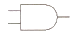
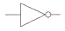
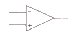
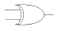
(정답률: 75%)
52. 다음 그림과 같이 입력이 동시에 ON 되었을 때에만 출력이 ON 되는 회로를 무슨 회로라고 하는가?
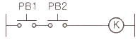
- OR 회로
- AND 회로
- NOR 회로
- NAND 회로
(정답률: 80%)
53. 타여자 발전기의 용도로 적당하지 않은 것은?
- 고전압 발전기
- 승압기(booster)
- 저전압 대전류 발전기
- 동기발전기의 주여자기
(정답률: 63%)
54. PLC 제어반의 특징이 아닌 것은?
- 유닛 교환으로 수리를 할 수 있다.
- 복잡한 제어라도 설계가 용이하다.
- 완성된 장치는 다른 곳에서 사용할 수 없다.
- 프로그램으로 복잡한 제어기능도 할 수 있다.
(정답률: 81%)
55. 논리식 a·1(a AND 1)을 간력히 했을 때 옳은 것은?
- 1
- 0
- a
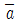
(정답률: 68%)
56. 접합 전계효과 트랜지스터(JEET)의 드레인-소스간 전압을 0에서부터 증가시킬 때 드레인 전류가 일정하게 흐르기 시작할 때의 전압은?
- 차단 전압(Cutoff Voltage)
- 임계 전압(Threshold Voltage)
- 항복 전압(Breakdown Voltage)
- 핀치오프 전압(Pinch-off Voltage)
(정답률: 58%)
57. 공기식 조작기로 옳은 것은?
- 전자밸브
- 전동밸브
- 서보전동기
- 다이어프램 밸브
(정답률: 64%)
58. 프로세서 제어에 속하지 않는 것은?
- 압력
- 유량
- 온도
- 자세
(정답률: 81%)
59. 이미터 접지 증폭회로에서 트랜지스터의 hfe=100, hie=10kΩ, 부하저항이 5kΩ이면 이 회로의 전압증폭도는?
- -5
- -10
- -50
- -100
(정답률: 57%)
60. 도전성 유체의 유속 또는 유량측정에 가장 적합한 것은?
- 전자 유량계
- 차압식 유량계
- 와류식 유량계
- 초음파식 유량계
(정답률: 54%)
4과목: 기계정비 일반
61. 축에 보스를 가열 끼움 시 가열온도로 가장 적당한 것은?
- 50 ~ 100°C 이하
- 100 ~ 150°C 이하
- 200 ~ 250°C 이하
- 300 ~ 350°C 이하
(정답률: 67%)
62. 유로방향의 수로 분류한 콕의 종류가 아닌 것은?
- 이방 콕
- 삼방 콕
- 사방 콕
- 오방 콕
(정답률: 78%)
63. 마이크로미터 나사의 피치가 p[mm], 나사의 회전각의 α[rad]일 때, 스핀들의 이동거리는 x[mm]는?
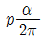
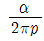
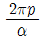
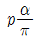
(정답률: 59%)
64. 코터의 빠짐을 방지하기 위한 방법으로 가장 적합한 것으?
- 코터를 용접한다.
- 코터에 나사를 만든다.
- 코터에 분할핀을 조립한다.
- 코터를 편구배로 가공한다.
(정답률: 74%)
65. 원심 펌프가 기동은 하지만 진동하는 원인으로 옳지 않은 것은?
- 축의 굽음
- 회전수 저하
- 캐비테이션 발생
- 볼 베어링의 손상
(정답률: 73%)
66. 유량 1m3/min, 전양정 25m인 원심펌프의 축동력은 약 몇 PS인가? (단, 펌프 전효율 0.78, 물의 비중량은 1000lkgf/m3이다.)
- 5.5
- 6.5
- 7.1
- 8.2
(정답률: 53%)
67. 펌프의 캐비테이션 방지책으로 적합한 것은?
- 펌프의 흡입양정을 되도록 높게 한다.
- 펌프의 회전속도를 되도록 높게 한다.
- 단 흡입 펌프이면 양 흡입 펌프로 사용한다.
- 유효흡입수두를 필요합입수두보다 작게 한다.
(정답률: 70%)
68. 축 마모부의 수리는 보스 내경과의 관계를 고려, 그 수리방법을 결정해야 한다. 수리방법의 판단기준으로 적합하지 않는 것은?
- 외관
- 신뢰성
- 비용과 시간
- 수리후의 강도
(정답률: 72%)
69. 축의 급유불량으로 나타나는 현상은?
- 조립 불량
- 축의 굽힘
- 강도 부족
- 기어 마모 및 소음
(정답률: 71%)
70. 굽어버린 축을 현장에서 수리하여 사용할 수 있는 일반적인 경우로 옳은 것은?
- 감속기가 고속회전축일 경우
- 중하중용이고 고속회전축일 경우
- 단 달림부에서 급하게 휘어져 있는 경우
- 500rpm 이하이며 베어링 간격이 길 경우
(정답률: 76%)
71. 임펠러(impeller) 흡입구에 의하여 송풍기를 분류한 것이 아닌 것은?
- 편 흡입형
- 양 흡입형
- 구름체 흡입형
- 양쪽 흐름 다단형
(정답률: 69%)
72. 바셀린(petrolatum)방청유의 종류가 아닌 것은?
- KP-4
- KP-5
- KP-6
- KP-7
(정답률: 74%)
73. 수격현상에서 압력상승 방지책으로 사용되지 않는 것은?
- 흡수조
- 밸브제어
- 안전밸브
- 체크밸브
(정답률: 69%)
74. V 벨트에 관한 설명으로 옳은 것은?
- V 벨트는 벨트 풀리와의 마찰이 없다.
- V 벨트의 종류는 M,A,B,C,D,E 여섯가지이다.
- V 벨트 풀리의 홈 모양의 크기는 V벨트 크기에 관계없이 일정하다.
- V 벨트의 형상은 V벨트 풀리와 밀착성을 높이기 위해 38°(도)의 마름모꼴 형상이다.
(정답률: 78%)
75. 베어링의 열박음 시 주의 사항이 아닌 것은?
- 깨끗한 광유에 베어링을 넣고 90 ~ 120°C로 가열한다.
- 축과 베어링 사이에 틈새가 발생되면 널링 작업 후 억지 끼워맞춤을 한다.
- 베어링 가열온도는 경도 저하 방지를 위해 120°C를 초과해서는 안된다.
- 베어링 냉각 시 틈이 있을 경우 지그를 사용하여 축 방향에 베어링을 밀어 고정한다.
(정답률: 69%)
76. 전동기 베어링부분에서 발열이 발생할 때 주요 원인이 아닌 것은?
- 벨트의 장력과대
- 베어링의 조립불량
- 커플링 중심내기 불량
- 전동기 입력전압의 변동
(정답률: 67%)
77. 다음 중 축의 고장원인으로 볼 수 없는 것은?
- 축의 재질불량
- 원동기의 회전불량
- 휘어진 축 사용으로 진동발생
- 풀리, 베어링 등의 끼워맞춤 불량
(정답률: 51%)
78. 다음 그림은 기어 감속기에 부착된 명판이다. 이 감속기의 출력회전수는 약 얼마인가?
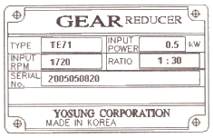
- 27.3 rpm
- 57.3 rpm
- 516 rpm
- 860 rpm
(정답률: 70%)
79. 펌프 축에 설치된 베어링에 이상 현상을 일으키는 원인이 아닌 것은?
- 윤활유의 부족
- 축 중심의 일치
- 축 추력의 발생
- 베어링 끼워맞춤 불량
(정답률: 74%)
80. 헬리컬 기어에 관한 설명으로 틀린 것은?
- 축방향의 반력이 발생한다.
- 큰 동력의 전달과 고속운전에 적합하다.
- 이의 맞물림의 원활하여 이의 변형과 진동소음이 작다.
- 이 끝이 직선이며 축에 나란한 원통형 기어로 감속비는 최고 1:6까지 가능하다.
(정답률: 59%)